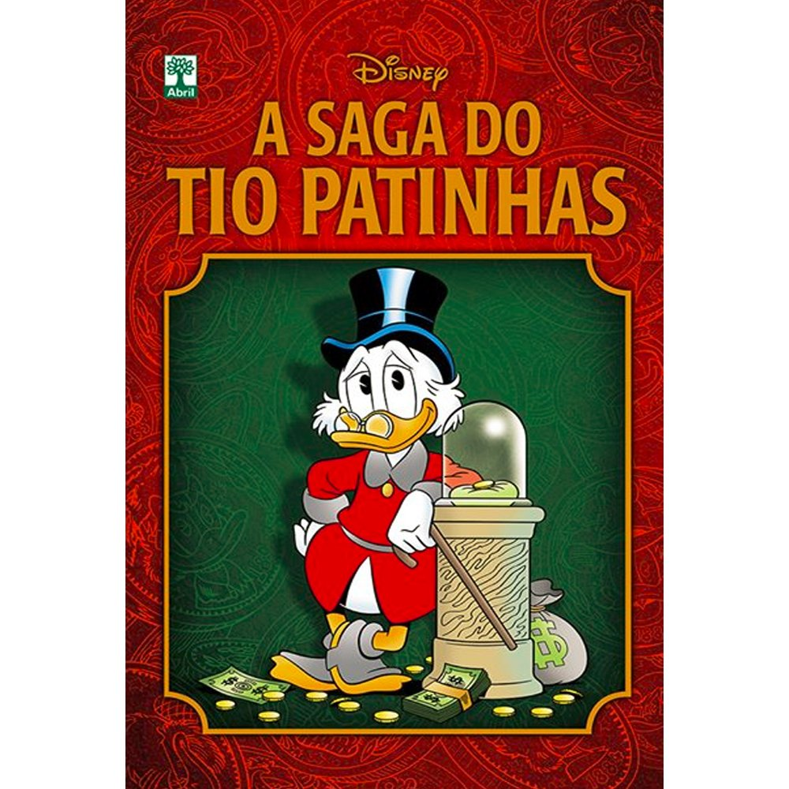
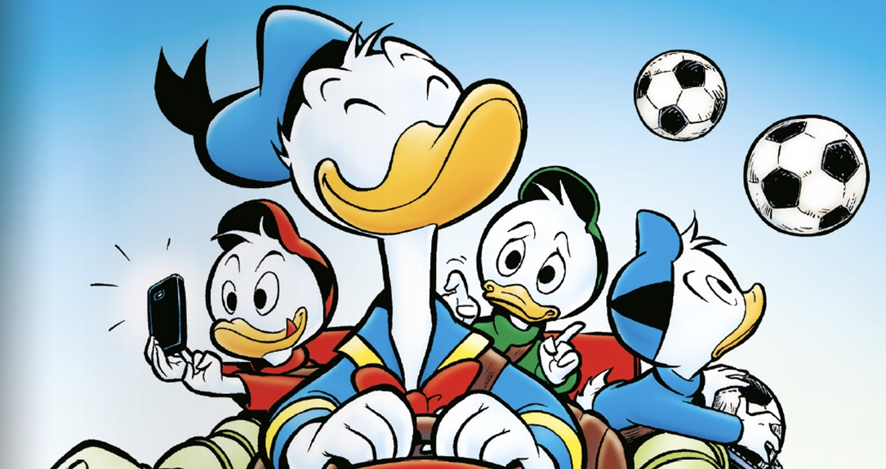
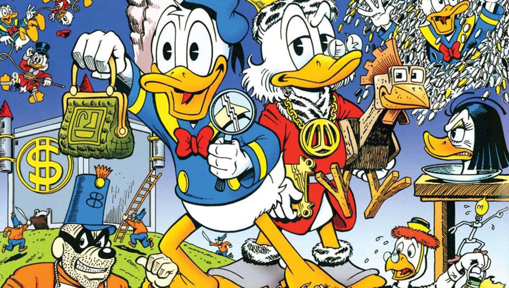

O famoso Tio Patinhas foi criado na década de 1940 por Carl Barks para a Walt Disney Company. Ele foi inspirado no personagem principal do clássico de Charles Dickens de 1843, “Um Conto de Natal”. Para esclarecer, o pato rico da Disney é caracterizado por ser um ‘velho’ pão-duro e cujo comportamento mesquinho lhe rendeu fortuna, ou seja, um dinheiro fruto do seu trabalho duro.
Além disso, ele tem fortes semelhanças com o rico industrial americano Andrew Carnegie, que também era um imigrante escocês, que fez fortuna com trabalho e engenhosidade. Por conseguinte, Tio Patinhas também mostra traços semelhantes de John D. Rockefeller. Rockefeller já levou o título de homem mais rico do mundo e o primeiro bilionário americano.
Mesmo sendo imensamente rico, Tio Patinhas não dispensa nenhuma oportunidade de ganhar mais. Por outro lado, ele frequentemente lamenta que os jovens queiram começar de cima em vez de trabalhar e conquistar a fortuna aos poucos como ele fez. Por isso, todas as lições que Tio Patinhas ensina aos seus sobrinhos trigêmeos Huguinho, Zezinho e Luisinho, ressaltam sempre os valores e a moralidade. Além da importância de serem totalmente honestos e justos.
Tio Patinhas não começou rico. Na verdade, ele era de uma família bem humilde. Ele começou a ganhar dinheiro fazendo graxe em botas de garimpeiros, assim, conseguindo a flamigerada "Moeda número 1". Após acumular o seu suado dinheiro, ele decidiu arriscar investir seu dinheiro para se aventurar, e assim, conseguir mais dinheiro. Foram muitas aventuras no seu caminho, e todas estão nesse livro:
| Tio Patinhas originalmente só apareceu em um quadrinho do Pato Donald em 1947; mas acabou estrelando o popular desenho animado DuckTales.
| Tio Patinhas é tio do Pato Donald por parte de mãe, ou seja, ele é tio de Huguinho, Zezinho e Luisinho.
| O primeiro emprego do Tio Patinhas foi de engraxate, quando ele tinha 10 anos. Por este serviço ele ganhou dez centavos, que se tornou sua moeda número um da sorte.
| Tio Patinhas é tão rico que tem uma caixa-forte do tamanho de um prédio de 26 andares.
| O programa DuckTales inspirou a criação de Indiana Jones.
DuckTales é uma série de animação dos estúdios da Walt Disney, produzido entre 1987 e 1990, e inspirado nas séries de quadrinhos da Disney, produzidas, na sua maior parte, por Carl Barks. É considerada a série de animação mais famosa já produzida pela Disney, pelo fato de ter sido a que teve mais episódios, no total, 100. Além da série, também foi produzido um longa-metragem, intitulado DuckTales the Movie: Treasure of the Lost Lamp, lançada em 1990, logo após terminar a série. O episódio-piloto foi transmitido nos Estados Unidos em 11 de setembro de 1987.
Quando o Pato Donald decide se alistar à Marinha, ele pede ao seu Tio Patinhas para cuidar de seus sobrinhos, Huguinho, Zezinho e Luizinho em sua mansão. Embora a princípio, tenha tratado os meninos com frieza, Patinhas logo acaba se apegando a eles ao ver como os três são inteligentes e corajosos e assim, os leva como ajudantes em suas aventuras ao redor do mundo em sua contínua busca para aumentar ainda mais a sua riqueza. Além deles, o desenho apresenta aparições frequentes do Professor Pardal (outro personagem vindo das histórias em quadrinhos), bem como participações especiais de Donald na primeira temporada e algumas aparições menores de Dora Cintilante, antiga namorada do Tio Patinhas, que marcou presença em uma das histórias mais aclamadas de Carl Barks.
Pato Donald (Donald Duck) é um personagem criado pelo ilustrador americano Walt Disney, em 1934. Sua estreia foi em 09/06/1934, como coadjuvante na animação A Galinha Esperta, mas logo foi elevado a personagem solo. Em 1937, estreou sua própria série, já com a criação dos sobrinhos Huguinho, Zezinho e Luizinho, e da namorada Margarida. Tornaria-se uma das marcas mais conhecidas da Disney, ao lado de Mickey. Mesmo passando por muitos problemas familiares, os dois se divertem muito com suas aventuras, e, acima de tudo, são uma grande família.
Os Irmãos Metralha (The Beagle Boys em inglês) formam uma quadrilha de ladrões atrapalhados das histórias em quadrinhos e dos desenhos animados (animação) da Disney. Geralmente tentam roubar a caixa forte do Tio Patinhas, sempre com resultados frustrados, porém dando muito trabalho ao Tio Patinhas e por vezes até ao Mickey e ao Coronel Cintra ao Morcego Vermelho e ao Gizmo Pato. Os Irmãos Metralha foram criados por Carl Barks, e são identificados pelo número (176-671, 176-761, 176-176, ...). Vez ou outra são contratados por Patacôncio para roubar o arquirrival Tio Patinhas. O trio principal de Irmãos Metralhas são Chico Esperto, Pula e Hamburguer (na versão portuguesa) ou Briguento, Bruto e Burguer (na versão brasileira).